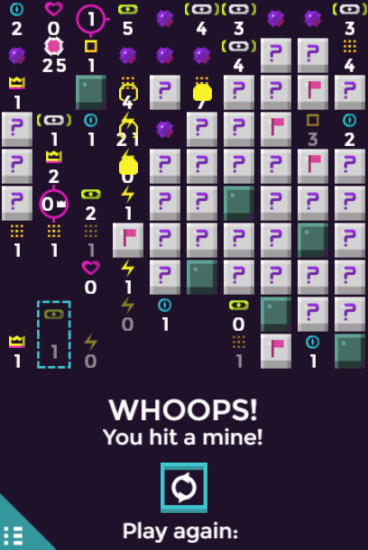
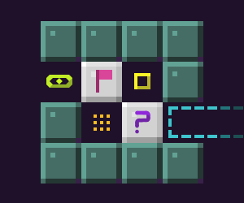
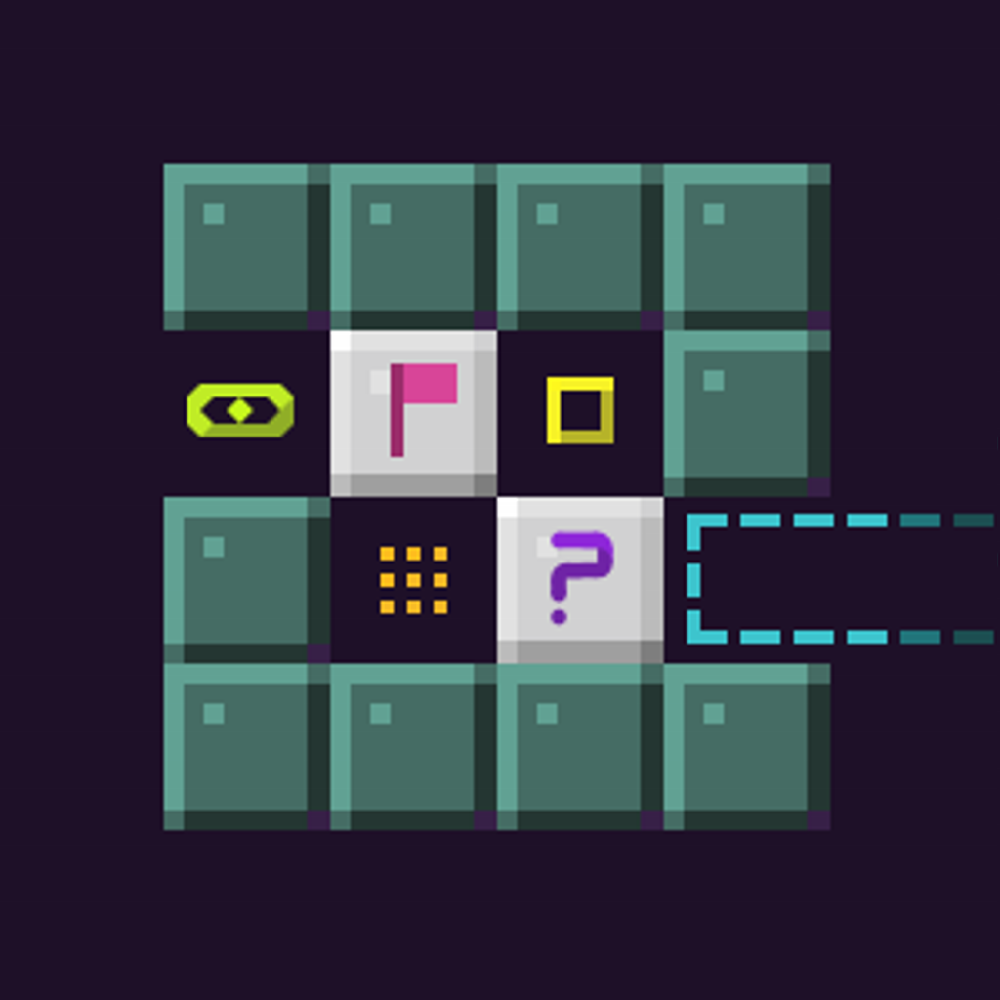
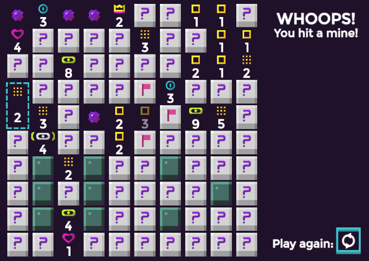
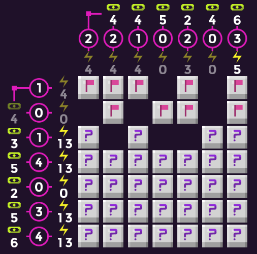
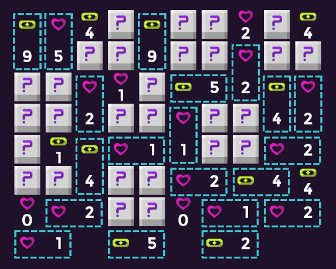
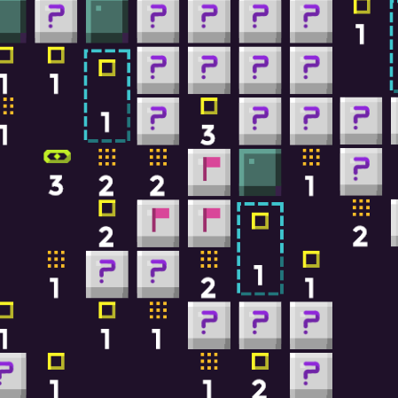

Presskit for Mine of Sight, a game by ZBlip
Puzzle game based on the classic familiar Minesweeper, but with an extended set of hint-types. Minesweeper's weird cousin.
The game has premade levels in a 10 by 10 grid. The campaign levels slowly introduce new hint-types.
Currently there are 100+ campaign levels. It also includes a random level generator called Minesweeper++ that allows you to include or exclude certain hint-types. Also included is a level editor and access to community-made levels.
Free browser game.
First version was released in Dec 2016.
Contact: @ZBlipGames on Twitter
Site URL: www.zblip.com/mineofsight
Facebook: https://www.facebook.com/Mine-of-Sight-1037635096381976/
Kongregate: http://www.kongregate.com/games/ZBlip/mine-of-sight/
Android app: https://play.google.com/store/apps/details?id=com.zblip.mineofsight&hl=en

Above picture shows off a lot of hint-types.
The crown tells you the biggest unbroken sequence that it can see.
The 'eyebracket' reports how many unbroken sequences that it sees.
The heart sees only 'lonely mines', mines that have 0 neighbor mines in the 4 cardinal directions.
The blue rectange merges 2 tiles into 1 big tile.
The blue compass tells you how many directions it sees mines in.
The pink circles tell you how many mines are shared between two hints
The lightning bolt reports the number of mines reachable by mine-to-mine contact





